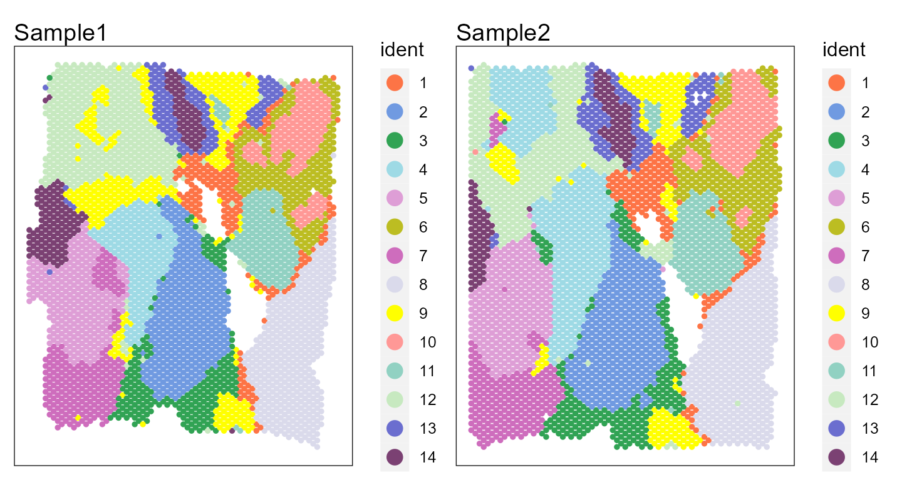
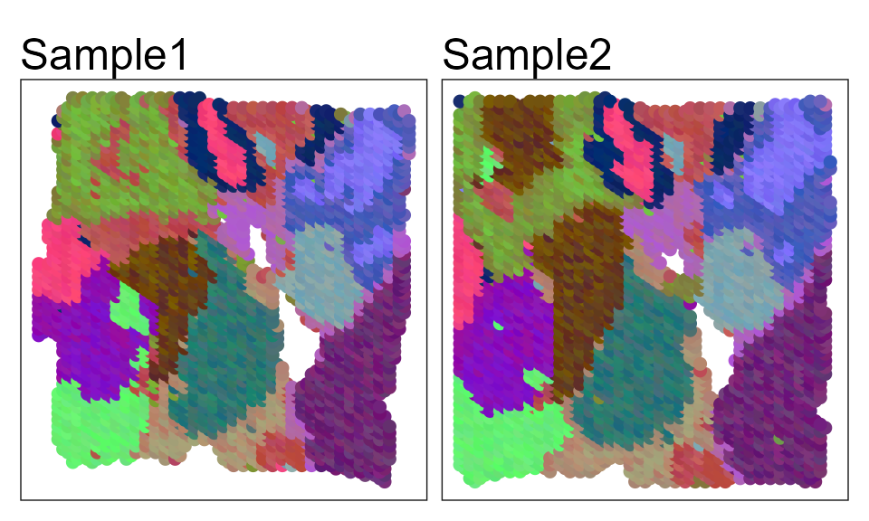
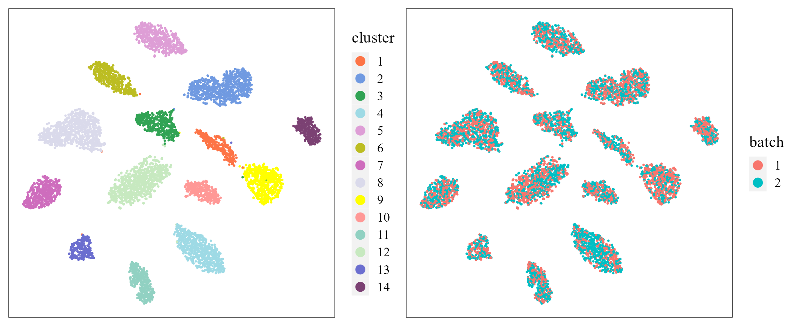
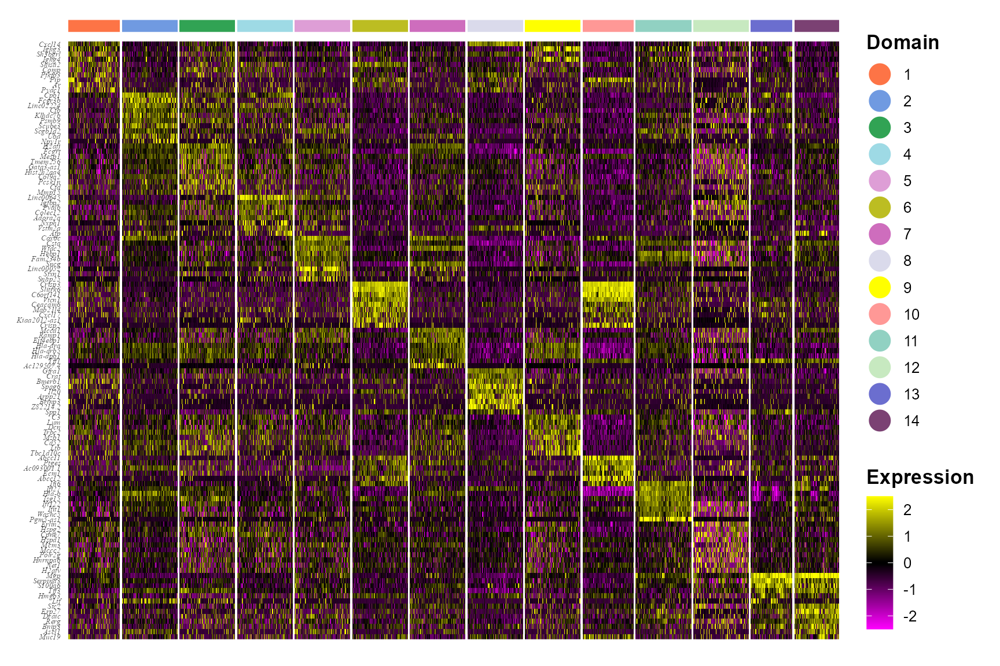

PRECAST.BreastCancer.RmdThe package can be loaded with the command:
library("PRECAST")
#> Loading required package: parallelLoading data
dir.file <- "E:\\Research paper\\IntegrateDRcluster\\iDR-SC\\Human_Breast_Cancer\\BlockA_Section"
seuList <- list()
for(r in 1:2){
message("r = ", r)
seuList[[r]] <- read10XVisium(paste0(dir.file, r))
}
library(Seurat)
seuList
## Create
library(PRECAST)
PRECASTObj <- CreatePRECASTObject(seuList)
human_breast_cancer2 <- PRECASTObj
save(human_breast_cancer2, file= paste0(dir.file, 1, "\\human_breast_cancer2_PRECASTObj.rds"))Human breast cancer data have been pre-processed and saved as the
PRECASTObj format.
## check the number of genes/features after filtering step
PRECASTObj@seulist
#> [[1]]
#> An object of class Seurat
#> 2000 features across 3798 samples within 1 assay
#> Active assay: RNA (2000 features, 1687 variable features)
#>
#> [[2]]
#> An object of class Seurat
#> 2000 features across 3987 samples within 1 assay
#> Active assay: RNA (2000 features, 1580 variable features)
## Add adjacency matrix list for a PRECASTObj object to prepare for PRECAST model fitting.
PRECASTObj <- AddAdjList(PRECASTObj, platform = "Visium")
#> Neighbors were identified for 3798 out of 3798 spots.
#> Neighbors were identified for 3987 out of 3987 spots.
## Add a model setting in advance for a PRECASTObj object. verbose =TRUE helps outputing the information in the algorithm.
PRECASTObj <- AddParSetting(PRECASTObj, Sigma_equal=FALSE, verbose=TRUE, int.model=NULL)For function PRECAST, users can specify the number of
clusters \(K\) or set K to
be an integer vector by using modified BIC(MBIC) to determine \(K\). First, we try using user-specified
number of clusters. For convenience, we give the selected number of
clusters by MBIC (K=14).
### Given K
# PRECASTObj <- PRECAST(PRECASTObj, K=14)
# To save compilation time ,we use the cached data.
# save(PRECASTObj, file= paste0(dir.file, "\\human_breast_resList_PRECASTObj.rds"))
load(paste0(dir.file, "\\human_breast_resList_PRECASTObj.rds"))Select a best model
## backup the fitting results in resList
resList <- PRECASTObj@resList
PRECASTObj <- selectModel(PRECASTObj)Integrate the two samples by the function
IntegrateSpaData.
seuInt <- IntegrateSpaData(PRECASTObj, species='Human')
seuInt
#> An object of class Seurat
#> 2000 features across 7785 samples within 1 assay
#> Active assay: PRE_CAST (2000 features, 0 variable features)
#> 2 dimensional reductions calculated: PRECAST, position
## The low-dimensional embeddings obtained by PRECAST are saved in PRECAST reduction slot.Show the spatial scatter plot for clusters
cols_cluster <- c( "#FD7446" ,"#709AE1", "#31A354","#9EDAE5",
"#DE9ED6" ,"#BCBD22", "#CE6DBD" ,"#DADAEB" ,
"yellow", "#FF9896","#91D1C2", "#C7E9C0" ,"#6B6ECF", "#7B4173" )
p12 <- SpaPlot(seuInt, batch=NULL,point_size=1, cols=cols_cluster, combine=TRUE)
p12
# users can plot each sample by setting combine=FALSEShow the spatial UMAP/tNSE RGB plot to illustrate the performance in extracting features.
seuInt <- AddUMAP(seuInt)
SpaPlot(seuInt, batch=NULL,item='RGB_UMAP',point_size=2, combine=TRUE, text_size=15)
#seuInt <- AddTSNE(seuInt)
#SpaPlot(seuInt, batch=NULL,item='RGB_TSNE',point_size=2, combine=T, text_size=15)Show the tSNE plot based on the extracted features from PRECAST to check the performance of integration.
seuInt <- AddTSNE(seuInt, n_comp = 2)
library(patchwork)
p1 <- dimPlot(seuInt, item='cluster', point_size = 0.5, font_family='serif', cols=cols_cluster) # Times New Roman
p2 <- dimPlot(seuInt, item='batch', point_size = 0.5, font_family='serif')
p1 + p2 
Combined differential expression analysis
library(Seurat)
#> Attaching SeuratObject
dat_deg <- FindAllMarkers(seuInt)
#> Calculating cluster 1
#> Calculating cluster 2
#> Calculating cluster 3
#> Calculating cluster 4
#> Calculating cluster 5
#> Calculating cluster 6
#> Calculating cluster 7
#> Calculating cluster 8
#> Calculating cluster 9
#> Calculating cluster 10
#> Calculating cluster 11
#> Calculating cluster 12
#> Calculating cluster 13
#> Calculating cluster 14
library(dplyr)
#>
#> Attaching package: 'dplyr'
#> The following objects are masked from 'package:stats':
#>
#> filter, lag
#> The following objects are masked from 'package:base':
#>
#> intersect, setdiff, setequal, union
n <- 10
dat_deg %>%
group_by(cluster) %>%
top_n(n = n, wt = avg_log2FC) -> top10
seuInt <- ScaleData(seuInt)
#> Centering and scaling data matrix
seus <- subset(seuInt, downsample = 400)Plot DE genes’ heatmap for each spatial domains identified by PRECAST.
color_id <- as.numeric(levels(Idents(seus)))
library(ggplot2)
## HeatMap
p1 <- doHeatmap(seus, features = top10$gene, cell_label= "Domain",
grp_label = F, grp_color = cols_cluster[color_id],
pt_size=6,slot = 'scale.data') +
theme(legend.text = element_text(size=16),
legend.title = element_text(size=18, face='bold'),
axis.text.y = element_text(size=7, face= "italic", family='serif'))
p1
Save some data
sessionInfo()
#> R version 4.1.2 (2021-11-01)
#> Platform: x86_64-w64-mingw32/x64 (64-bit)
#> Running under: Windows 10 x64 (build 22000)
#>
#> Matrix products: default
#>
#> locale:
#> [1] LC_COLLATE=Chinese (Simplified)_China.936
#> [2] LC_CTYPE=Chinese (Simplified)_China.936
#> [3] LC_MONETARY=Chinese (Simplified)_China.936
#> [4] LC_NUMERIC=C
#> [5] LC_TIME=Chinese (Simplified)_China.936
#>
#> attached base packages:
#> [1] parallel stats graphics grDevices utils datasets methods
#> [8] base
#>
#> other attached packages:
#> [1] ggplot2_3.3.5 dplyr_1.0.8 SeuratObject_4.0.4 Seurat_4.1.0
#> [5] patchwork_1.1.1 PRECAST_1.0
#>
#> loaded via a namespace (and not attached):
#> [1] utf8_1.2.2 reticulate_1.24
#> [3] tidyselect_1.1.2 htmlwidgets_1.5.4
#> [5] grid_4.1.2 BiocParallel_1.28.3
#> [7] Rtsne_0.15 munsell_0.5.0
#> [9] ScaledMatrix_1.2.0 codetools_0.2-18
#> [11] ragg_1.2.2 ica_1.0-2
#> [13] future_1.24.0 miniUI_0.1.1.1
#> [15] withr_2.5.0 spatstat.random_2.1-0
#> [17] colorspace_2.0-3 Biobase_2.54.0
#> [19] highr_0.9 knitr_1.37
#> [21] rstudioapi_0.13 stats4_4.1.2
#> [23] SingleCellExperiment_1.16.0 ROCR_1.0-11
#> [25] tensor_1.5 listenv_0.8.0
#> [27] MatrixGenerics_1.6.0 labeling_0.4.2
#> [29] GenomeInfoDbData_1.2.7 polyclip_1.10-0
#> [31] farver_2.1.0 rprojroot_2.0.2
#> [33] parallelly_1.30.0 vctrs_0.3.8
#> [35] generics_0.1.2 xfun_0.29
#> [37] ggthemes_4.2.4 R6_2.5.1
#> [39] GenomeInfoDb_1.30.1 ggbeeswarm_0.6.0
#> [41] rsvd_1.0.5 bitops_1.0-7
#> [43] spatstat.utils_2.3-0 cachem_1.0.6
#> [45] DelayedArray_0.20.0 assertthat_0.2.1
#> [47] promises_1.2.0.1 scales_1.1.1
#> [49] beeswarm_0.4.0 gtable_0.3.0
#> [51] beachmat_2.10.0 globals_0.14.0
#> [53] goftest_1.2-3 rlang_1.0.1
#> [55] systemfonts_1.0.4 splines_4.1.2
#> [57] lazyeval_0.2.2 spatstat.geom_2.3-2
#> [59] yaml_2.3.5 reshape2_1.4.4
#> [61] abind_1.4-5 httpuv_1.6.5
#> [63] tools_4.1.2 ellipsis_0.3.2
#> [65] spatstat.core_2.4-0 jquerylib_0.1.4
#> [67] RColorBrewer_1.1-2 BiocGenerics_0.40.0
#> [69] ggridges_0.5.3 Rcpp_1.0.8
#> [71] plyr_1.8.6 sparseMatrixStats_1.6.0
#> [73] zlibbioc_1.40.0 purrr_0.3.4
#> [75] RCurl_1.98-1.6 rpart_4.1.16
#> [77] deldir_1.0-6 pbapply_1.5-0
#> [79] viridis_0.6.2 cowplot_1.1.1
#> [81] S4Vectors_0.32.3 zoo_1.8-9
#> [83] SummarizedExperiment_1.24.0 ggrepel_0.9.1
#> [85] cluster_2.1.2 fs_1.5.2
#> [87] magrittr_2.0.2 GiRaF_1.0.1
#> [89] data.table_1.14.2 scattermore_0.8
#> [91] lmtest_0.9-39 RANN_2.6.1
#> [93] fitdistrplus_1.1-6 matrixStats_0.61.0
#> [95] mime_0.12 evaluate_0.15
#> [97] xtable_1.8-4 mclust_5.4.9
#> [99] IRanges_2.28.0 gridExtra_2.3
#> [101] compiler_4.1.2 scater_1.23.7
#> [103] tibble_3.1.6 KernSmooth_2.23-20
#> [105] crayon_1.5.0 htmltools_0.5.2
#> [107] mgcv_1.8-39 later_1.3.0
#> [109] tidyr_1.2.0 DBI_1.1.2
#> [111] MASS_7.3-55 Matrix_1.4-0
#> [113] cli_3.2.0 igraph_1.2.11
#> [115] DR.SC_2.9 GenomicRanges_1.46.1
#> [117] pkgconfig_2.0.3 pkgdown_2.0.2
#> [119] plotly_4.10.0 scuttle_1.4.0
#> [121] spatstat.sparse_2.1-0 vipor_0.4.5
#> [123] bslib_0.3.1 XVector_0.34.0
#> [125] CompQuadForm_1.4.3 stringr_1.4.0
#> [127] digest_0.6.29 sctransform_0.3.3
#> [129] RcppAnnoy_0.0.19 spatstat.data_2.1-2
#> [131] rmarkdown_2.11 leiden_0.3.9
#> [133] uwot_0.1.11 DelayedMatrixStats_1.16.0
#> [135] shiny_1.7.1 lifecycle_1.0.1
#> [137] nlme_3.1-155 jsonlite_1.8.0
#> [139] BiocNeighbors_1.12.0 desc_1.4.0
#> [141] viridisLite_0.4.0 limma_3.50.1
#> [143] fansi_1.0.2 pillar_1.7.0
#> [145] lattice_0.20-45 fastmap_1.1.0
#> [147] httr_1.4.2 survival_3.2-13
#> [149] glue_1.6.2 png_0.1-7
#> [151] stringi_1.7.6 sass_0.4.0
#> [153] textshaping_0.3.6 BiocSingular_1.10.0
#> [155] memoise_2.0.1 irlba_2.3.5
#> [157] future.apply_1.8.1